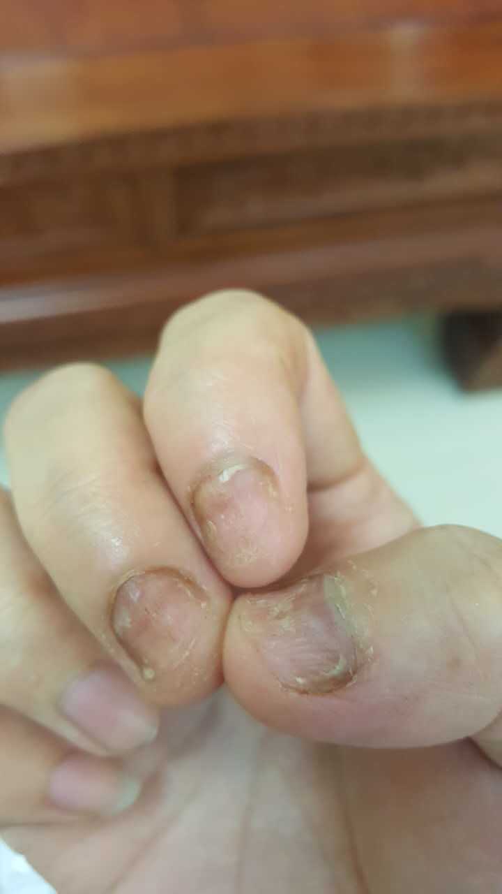
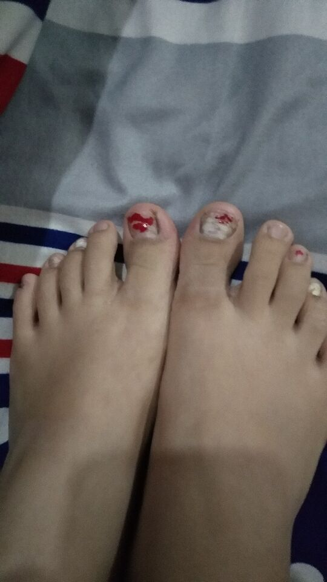
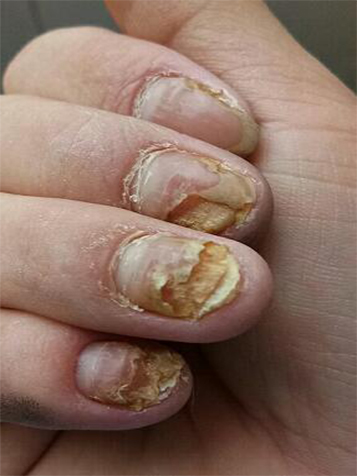
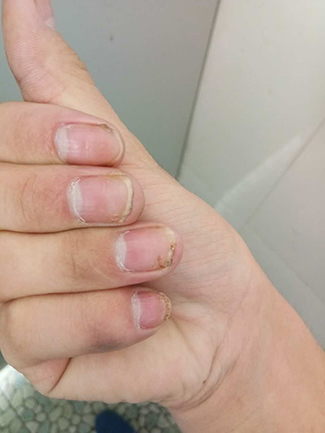

问题详情
灰指甲越来越严重，七年了可以好吗
出现时间 ：灰指甲七年
详情描述 ：我是一名会计，灰指甲七年了，刚开始只是手上有，用过各种产品，亮甲、达克宁等都用过，没什么效果，也用过内服的，效果很不明显，还听别人说用大蒜和醋来泡，手都泡浮肿了，也去过修甲店，把指甲修的太薄，真的是钻心的疼，后来传到脚趾也有，化脓穿袜子都疼，走路不方便。求各位支招，能治好、能去根的好方法...跪谢！！

相关问题
回答
很同情你的经历，治疗灰趾甲，长期吃药肯定不行，会造成药物性肝损伤；手术拔除不但人遭罪而且不能根治；还有就是用亮甲之类的外敷药，容易反复，白花钱。另外就是醋泡大蒜治疗只会加重病情。灰趾甲发病的真正原因是皮癣菌、酵母菌及非皮癣菌等真菌引起的甲感染。所以普通乳膏是肯定是不能解决的，严重的会出现甲部红肿、渗水等现象。根据你的情况我介绍一位灰趾甲老师给你，她用的是中药秘制配方治疗灰趾甲，可以彻底治好你的灰趾甲，很多人都在用，而且也没有复发，你可以加她微信咨询一下，这是她的微信号 weixin060a （长按可复制，打开微信粘贴添加即可） ，对你肯定有帮助！2017-08-15 10:16
上面王主任说的很对，灰指甲是复杂的真菌感染等引起的顽固性真菌感染。市面上的一些产品的确没什么效果，很多患者用亮甲都没效果，达克宁治脚气都不行，醋泡大蒜起不到治疗效果，泡到手脚起泡浮肿，也没用，这些都是治标不治本。你遇到的这些情况，也是很多患者遇到过的，你这也是走了很多弯路啊，真的很同情你！王主任推荐的古老师，用中药秘方治疗灰趾甲，治疗过程简单，不痛不痒，不影响工作生活，效果相当不错，的确可以治好你的灰指甲，你可以先加她微信咨询了解一下。2017-09-28 21:36
灰指甲第一平时要注意清洁卫生，在饮食上要避免食用一些刺激性食物；第二含有激素类的乳膏不要长期用，对后期治疗会带来难度；第三一定不要贪图便宜，除灰指甲也不是很难，要对自己有信心，两位主任推荐的这个古老师，我也认识，她收藏了很多皮肤问题的民间小偏方，我经常向她找一些小偏方，为人非常热情，建议你加下微信，有灰指甲方面的问题，直接问古老师就行了，她会细心给你解答的，可以说是我推荐的哦，她的微信 weixin060a （长按可复制，打开微信粘贴添加即可） ，祝你早日恢复健康。2017-10-10 17:34
- 热门评论
- 张昕怡 金牌会员
- 关注板块：女性健康 灰指甲
- 帮助网友：1932 称赞：869
- 袁译宣 普通会员
- 葛乾恩 银牌会员
- 张昕怡 金牌会员
- 秦子钧 金牌会员
- 唐潮勤 普通会员
- 张昕怡 金牌会员
- 汤明娟 铜牌会员
- 张耘溪 金牌会员
- 张昕怡 金牌会员
- 尹一达 银牌会员
- 薛贺元 铜牌会员
- 纪晓蓉 普通会员
- 卢子文 普通会员
- 程忠梅 银牌会员
- 李彦彬 普通会员

17年5月份吧，不知道啥原因突然就有的，一开始只有一个大拇指,不到三个月感染了四个指甲,去看了说是灰指甲，治好后又复发了，我都绝望了，后来一个同事介绍我找到楼上推荐的古老师,大概3个月的时间基本上恢复了,而且到目前也没有复发的迹象，真的太后悔这么晚遇见老师了。有灰指甲朋友们，赶紧加她吧。这是老师的微信号: weixin060a ,希望各位朋友都能早点摆脱灰指甲带来的困扰。

2017-09-25 09:49:01
我的本来不是很严重，用网上说的一些方法试了好多次，不过说真的，真没有啥效果，症状还有点严重了，看到大家说的这么专业，感觉还是这放心些，老师的微信号我已经加了。
我已经好了，新指甲完全长出来了，现在已经一年了也没有再复发过,老师偶尔还会给我发消息，告诉我一些注意事项。前面有我分享的过程，你可以参考一下。
我手上有4个灰指甲，好几年了，用了很多方法都没有用，症状反而越来越严重，现在跟人握手都不好意思伸手，花了不少冤枉钱，网上也看了很多类似的文章，最后在朋友的介绍下找到古老师才弄好的,快一年了,没有再复发！
2017-10-02 09:31:43
我的灰指甲三年多了，手上5个，做过拔甲，花了2000多，可疼，最后长出来还是一样的，有治好的朋友吗？求帮助！！！
我的好了，到现在还没有发现任何复发的迹象，这点让我很欣慰，我也不知道你到底是什么情况，她的微信: weixin060a ，你可以加老师的微信,让老师给你详细判断一下！
刚开始我还有些不太相信，后来我想着反正先加一下微信了解一下也无妨，聊天的过程中感觉到老师很专业、很负责，然后就用了她的方法，一段时间后就有明显的好转，用了两个多月，之前的那些灰指甲的症状都没有了！
2017-10-05 20:13:08
我老公也用着古老师的方法，效果不错，用了一段时间，之前的症状基本没了，效果还是很明显的，再也不担心被传染了，推荐大家加一下古老师的微信
是的，我也是在古老师这里治好的，效果比想象中要好很多，关键是用起来方便，不影响工作生活。这是老师的个人微信号 weixin060a （长按可复制，打开微信粘贴添加即可）
谢谢王主任及各位朋友的推荐，我已经加了古老师的微信，把古老师的朋友圈翻了一遍，那么多治愈案例，每天还分享养生知识、小偏方，太实用了，我先治疗看看，治好给大家分享一下。
2017-10-07 15:22:13
古老师的方法确实不错，不仅治好了我的灰指甲，她收集的那么多小偏方，让我受益匪浅，推荐大家加一下她微信： weixin060a （长按可复制，打开微信粘贴添加即可）
2017-10-10 23:01:41
问题相关
陕西咸阳百姓乐大药房连锁有限公司

添加老师个人微信号: weixin060a （←长按可以复制，再去微信添加好友）,一招还原指甲打开微信